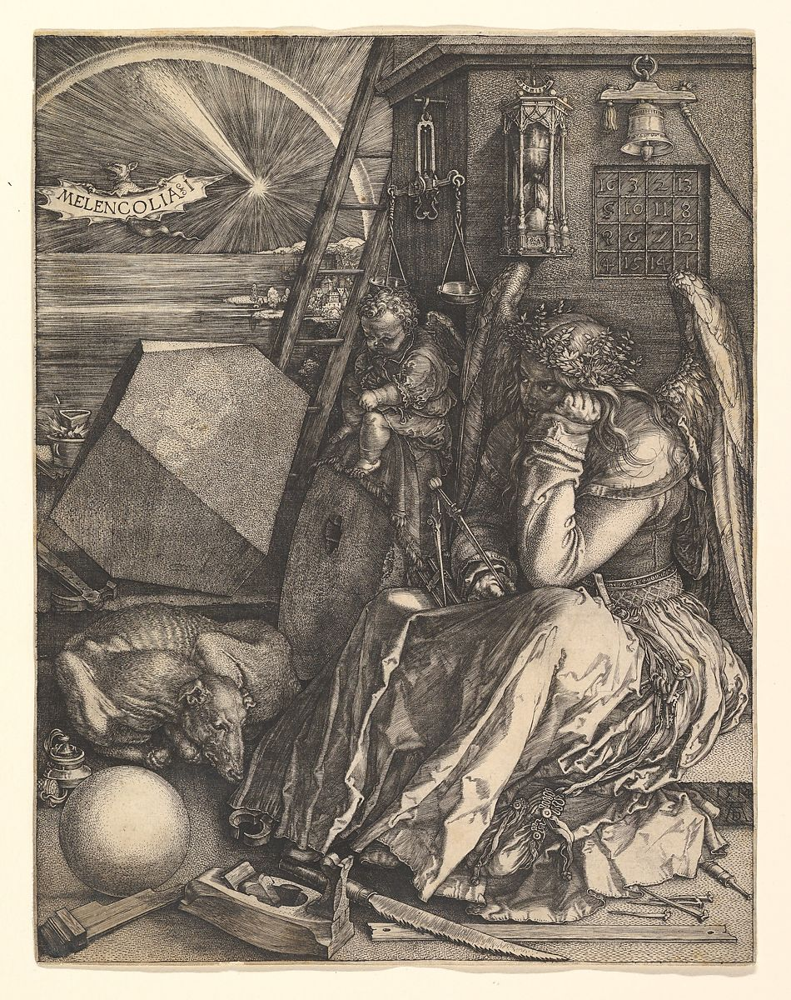

Ute Craemer
When a human being enters upon earthly life he delivers himself up completely, with all his senses and feelings. For the child the world is good, therefore it imitates everything in its surroundings. Later, at around six or seven years of age, the child acquires a certain independence, but even then it perceives the world through the deeds, feelings and thoughts of its educators. They are the bridge which unites the child to the world and through them it perceives what is good or evil, beautiful or ugly, true or false. It is only during adolescence that the human being begins to look at the world critically, searching for an ideal, a meaning to life.
The question arises: And in a Brasilian favela? How are these laws of development affected under such adverse conditions? The laws of development are universal, but the environment affects the individual in different ways, favoring or impeding his development.
A child like Divino, born in a favela, is deeply marked by his environment and conditions of life. When a child is born in a favela the mother, sisters and brothers, the whole family is happy and a climate of love reigns around the newly-born. It is received just as any child is, regardless of social class. After a few days, however (and this is one of the most painful phenomena we meet in the favela), that same child has already been marked by the scars of poverty: dysentery, skin lesions, fever or potentially fatal illnesses such as dehydration or pneumonia. Nutrition is deficient, especially if the mother is not able to nurse the child, sense impressions are deplorable: noisy, ugly huts, always humid and very hot in summer, "decorated" with pages torn from magazines... Continue
Don't forget to so we can advise you when the next issue is ready!

You can find us under the Southern Cross in the Traslasierra Valley, Province of Córdoba, Argentina. Visitors always welcome. Just follow the sign that reads: La Cruz del Sur.
Frank Thomas Smith, Editor
Editor's Page
The corona virus – masks, social distancing, global warming, virtual sex, team Intelligence and egotistical reincarnation

Dear Readers,
Every once in a great while I receive an anonymous submission. Usually, after reading the first sentence, I delete it. This time I admit that the wordy subject, which seems to indicate that the author is getting the world's problems off his/her chest with one long gasp, intrigued me, so I read it all. I have no idea who wrote it. I answered to the gmail address from which it came, but it bounced. That means that whoever wrote it created a gmail account for the sole purpose of submitting the essay, then deleted the account in order to retain anonymity. Anyway, after debating with my conscience, I decided to publish it just in case. You be the judge...
Continue reading
Education
The Empire Has No Clothes
In the Classroom that Zoom Built
Do you hear that silence?
That’s the absence of footsteps echoing through our nation’s public school hallways. It’s the silence of teaching in a virtual space populated with students on mute who lack a physical presence. It’s the crushing silence of those who are now missing, who can’t attend the classroom that Zoom and Google built.
Maybe you heard the shouted pleas of teachers across the country last year as we walked out of our classrooms and into the streets, begging for affordable housing, health care, and access to equitable resources for our students? Or maybe you heard the impassioned screams of frightened kids as they stormed into the streets, demanding safety and an end to the threat of gun violence in our nation’s school buildings? Now, there’s nothing left to hear.
Today, all we’re left with is a deafening silence that muffles the sound of so much suffering. The unfolding public health, mental health, and economic crisis of Covid-19 has laid bare the fragility of what was. The institutions charged with caring for and guiding our most valuable assets -- our children -- were already gutted by half a century of chronic underfunding, misguided curricular policies that prioritized testing over real learning, and social policies that favored austerity over taking care of the most vulnerable members of our society. Now that so many teachers are sequestered and alone or locked away with family, our bonds of proximity broken, we’re forced to stare into that void, scrambling to find and care for our students across an abyss of silence. The system is broken. The empire has no clothes.
Continue
Current Events
La lucha por sobrevivir en la pobreza en Argentina -
más allá de la pandemia
"No llorés más, mami. Comprame un carro y un caballo y vamos a salir adelante. No nos vamos a cagar más de hambre, vas a ver”. Daniela tiene 29 años. Cuenta que esas palabras de su hijo, de 7, le hacen sacar fuerzas de donde no tiene, para levantarse de la cama.
Su desvelo hoy no es la pandemia. Es el frío, sus cuatro chicos y “un bebé que viene en camino”. Su pareja, víctima de adicciones, se suicidó meses atrás. “Yo le había dicho que se fuera el Día de la Madre, porque me hizo mucho daño. Nunca me acompañó”, comienza a contar.
La joven vive en la precariedad total, en uno de los sectores más periféricos y vulnerables de Río Cuarto, Provincia de Córdoba, Argentina: Paso del Indio. Es un asentamiento cerca del río, en el límite de la ciudad con el área rural. Daniela muestra la habitación de madera en la que vive. Cuenta que se la regaló un tío. Le fue agregando con materiales (comprados con un crédito de Ansés) una estufa hogar y un baño, que aún está sin techo.
Continuar
Martin Luther King's three Giant Triplets
Racism, Yes, But What About Militarism and Materialism?
In the wake of the police killing of George Floyd, Americans are finally -- or is it once again? -- confronting the racism that afflicts this country and extends into just about every corner of our national life. Something fundamental just might be happening.
Yet to state the obvious, we’ve been here before. Mass protests in response to racial inequality and discrimination, including police brutality, have been anything but unknown in the United States. Much the same can be said of riots targeting black Americans, fomented and exploited by white racists, often actively or passively abetted by local law enforcement officials. If Jamil Abdullah Al-Amin, formerly known as H. Rap Brown, was correct in calling violence “as American as cherry pie,” then race-related urban unrest is the apple-filled equivalent.
The optimists among us believe that “this time is different.” I hope events will prove them right. Yet recalling expectations that Barack Obama’s election in 2008 signaled the dawn of a “post-racial America,” I see no reason to expect it to be so. A yawning gap, I fear, separates hope from reality.
Let me suggest, however, that the nation’s current preoccupation with race, as honorable and necessary as it may be, falls well short of adequately responding to the situation confronting Americans as they enter the third decade of the twenty-first century. Racism is a massive problem, but hardly our only one. Indeed, as Martin Luther King sought to remind us many years ago, there are at least two others of comparable magnitude.
Continue
Features
The End of Meat Is Here
Is any panic more primitive than the one prompted by the thought of empty grocery store shelves? Is any relief more primitive than the one provided by comfort food? Most everyone has been doing more cooking these days, more documenting of the cooking, and more thinking about food in general. The combination of meat shortages and President Trump’s decision to order slaughterhouses open despite the protestations of endangered workers has inspired many Americans to consider just how essential meat is. Is it more essential than the lives of the working poor who labor to produce it? It seems so. An astonishing six out of 10 counties that the White House itself identified as coronavirus hot spots are home to the very slaughterhouses the president ordered open. In Sioux Falls, S.D., the Smithfield pork plant, which produces some 5 percent of the country’s pork, is one of the largest hot spots in the nation. A Tyson plant in Perry, Iowa, had 730 cases of the coronavirus — nearly 60 percent of its employees. At another Tyson plant, in Waterloo, Iowa, there were 1,031 reported cases among about 2,800 workers. Sick workers mean plant shutdowns, which has led to a backlog of animals. Some farmers are injecting pregnant sows to cause abortions. Continue
New Relationships
Some nights ago I was watching a performance of Pink Floyd from 1995. I could hardly listen to the music and was much more conscious of the spectacle. Everything was larger than life: the hall, thousands of people in the audience, a huge video screen, light shows, lasers, a flying dummy plane crashing, etcetera. It all seems so foreign now, after merely two months of Corona, but it makes me wonder if this image will ever reappear or whether it is just an echo from the past.
Reading about the situation that we are in and contemplating on the repercussions I am faced with the questions: will we ever be able to cram thousands of people inside close spaces again? will we ever be able to easily travel from one part of the world to another to listen to a performance of this or that band? And better yet – will we still wish to? Having previously tasted the bitter taste of the music industry, its assembly line dynamics where each person works on a small part and is completely alienated from the project as a whole and from the music itself, a part of me will happily let go of what wants to pass away...
Continue
Lord, protect us all from "Experts"
An expert, in general, is a peculiar type of … of what? They are expected to know what they are talking about. So, in a sense, the expert has/gets to define/represent the area of their expertise. Usually, there is a “field” of interest, in which the expert has been educated and trained. You wouldn’t go to the front-yard mechanic on the corner if your kid needs heart surgery. Expertise in one field generally does not mean they are experts in any other field. Some folk are experts in more than one field, yet still the tendency is for specialization, being as no one should ever be saying they know everything. Doesn’t hurt if the expert has some humility, although we expect them to act with at least an appearance of certainty. Sometimes the expert can act is if their version of the matter at issue is the consensus in the field. In the Press, we will see someone described as a “leading” authority. Other experts gain reputation when they have a title in some institution: Vice president of marketing research. Holder of the Donald Duck Chair at Harvard Medical School, in the field of forensic analysis of dead people – i.e the chief pathologist in residence there. Continue
Children's Corner
The Divine Child
Once upon a time there was a child who lived in heaven, where it rested a very long time and slept. The greatest brilliance came from the area around God’s throne. But the light shone so brightly that it was blinding, so the child of heaven never went near God’s throne.
One day the child awoke, looked down and saw something terrible, pitch-black clouds, iridescent violet waves, fire battling against water, lightning flashes that destroyed houses, burning forests, and in the midst of this chaos the child saw people trying to save others.
The boy was so frightened by all this that he called his Guardian Angel and asked:
- What does the chaos down there mean? Where is this abomination happening?
- On earth, was the Guardian Angel’s answer.
- And what does it mean? The child wanted to know...
Continue
Science
The Cosmological Principles - Some Final Remarks

Cosmology, the science of the entire physical Universe, from the beginning of its contemporary development, that is from the time when Albert Einstein wrote down a single set of mathematical equations and suggested that it represent the entire material world, has employed models for presenting its results. Models, in the sense used in cosmology, are strict mathematical conclusions drawn from simplified but distinctly formulated assumptions. Other branches of astronomy and physics also used models. There were models of atoms, models of stellar interiors, models of the Earth's core....Models were first used for understanding structures and processes not accessible to direct observation. The atoms were too small to be observed; the stellar and terrestrial interiors were screened by the outer shells of those bodies. Similarly, the regions of the Universe situated beyond the cosmological horizon were unobservable and thus needed to be represented through models...
Continue
Fiction
Toto the Fourth
After leaving behind from a relatively successful business career just as the re-engineering and downsizing craze began, I slouched with my eyes half-closed into retirement blues and hit bottom when my wife died. An old friend, sympathizing, invited me to spend a week or two at his home in a retirement village in Florida. The idea appealed to me about as much as taking home leftovers in a doggy-bag, but he was well-meaning and I wanted preserve our friendship, so I accepted. On the third day in Boca Raton I decided to go to the beach. My host excused himself, saying that the ocean was dangerous and there were no lifeguards on duty on weekdays and anyway there were several perfectly good pools in the Village.
I drove past the entrenched retirement villages and shopping malls and over the drawbridge to the deserted beach. At the water's edge the rising sun cast a wavy red line across the sea from the horizon to my ankles. The sea was rough, but I've always been a good swimmer so it didn't worry me. I pushed my way through the breakers to where the chest-high water was relatively calm and floated with my eyes closed. As often happens recently, I went back not to yesterday but way beyond. The decades rolled through my mind like gently rocking waves, tempting me into a kind of half-sleep.
Suddenly a less gentle wave washed over my face, forcing water up my nose. I coughed and righted myself to stand but there was nothing down there to stand on. I looked around for the beach and was shocked that it was so far away. Could I have fallen asleep? No, I saw what happened. Close to where I entered the water the shoreline curved away, so as I drifted along with the strong current the distance between me and the beach widened proportionally...
Continue
Toto Cuarto
Melancholy

When his wife called from Paris, Adriano was sitting at a table in the dinette of their San Nicola home sipping Pernod and examining Dürer’s Melencolia 1. The lamp pointing at the framed engraving hanging on the wall in front of him was the only light on. The tenebrous depths of the rest of the room intensified his pleasant isolation from the world. He jumped slightly when in the darkness a shutter banged. The familiar north wind suddenly began pounding against windows and doors, its blasts soon shaking the whole house. He turned his eyes away from Dürer to listen to the ferocious tramontana wind that he loved, nodded approvingly and took a distracted sip from a tall glass of Pernod. From time to time he shifted his eyes from the engraving to contemplate his own shadowy reflection in the wall mirror hanging alongside the framed picture—gaunt face, pale forehead, lower lip projected, chicken neck, long hair and full beard, one slim arm lying stretched across the table. He thought he resembled an old portrait molded by time that had left a permanent melancholy in his eyes, in his reflection shiny like the eyes of the sad woman in the engraving. For a brief moment Adriano had imagined that he was somewhere inside the art he was studying, inside the polyhedron, inside the sadness of the despondent woman with light eyes and the look of one mourning for the death of an angel. Yet even from that dreamy conceptual position inside the engraving, he still found the art psychologically disturbing... Continue
Anthroposophy
A Contemporary Theological Anthropology
of Two Jesus Children
This paper will examine Jesus’ genealogies in Matthew and Luke from the perspective of a transracially adopted bi-racial person. It will argue that the two genealogies refer to two different people and that the identities of the two children are transculturally significant. This paper will also be concerned with knowledge and what we allow in respect of gathering information of the kind that situates us in the world so that we achieve our own perspective upon it and upon our existence. The perspective adopted here will presume a reincarnational anthropology that contextualizes the significance of bloodline and biological inheritance. Jesus Christ will be shown to be a complicated person from the perspective of his origins and to have an identity not defined from bloodline... Continue
Esoteric Lessons for the First Class - Recapitulation 7
Since the Christmas Conference an esoteric breath flows through the whole Anthroposophical Society. And those members of the Anthroposophical Society who have taken part in the general members' lectures will have noted how this esoteric breath flows through all the work within the anthroposophical movement now, and should do so in the future.
This was a necessity which, above all, flows from the spiritual world, from where the revelations come which should live in the anthroposophical movement.
Therefore the necessity arose to create a certain nucleus for anthroposophical esoteric life, to create real esoteric life, and therewith the necessity arose to build a bridge to the spiritual world itself.
In a certain sense the spiritual world had to manifest the will for the creation of such a School. For an esoteric school cannot be created by human arbitrariness, nor from that human arbitrariness called “human ideals”; rather must this esoteric school be the body for something which flows out of spiritual life, so that everything that occurs in such a school presents the outer expression of an activity which in reality occurs in the spiritual world itself. Therefore this esoteric school could not have been created without first asking the will of Michael, which since the last third of the nineteenth century has been guiding human affairs – something which I have often mentioned here in members' lectures...
Continue
Poetry
Four Quartets

The problem with most foreign lands
is that they're much too far away,
like the bleachers in Ebbett's used to be
before the debacle of technology.
Also, either they're terribly bland,
foggy, windy and damp, or,
if southerly, downright dangerous,
where bullets fly and sunscreen 21
can't ward off the assassin sun.
Why, then, does he dwell,
ducking and frying, far from the patria
he tearfully invokes over juice of the grape
at a sidewalk table of the corner taberna?
Continue